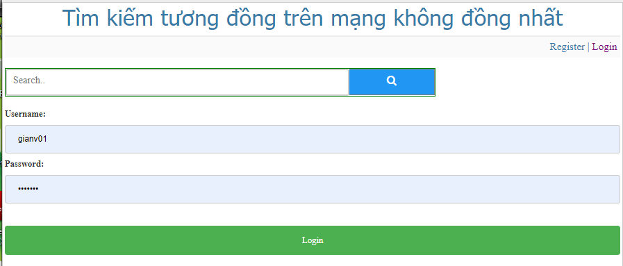
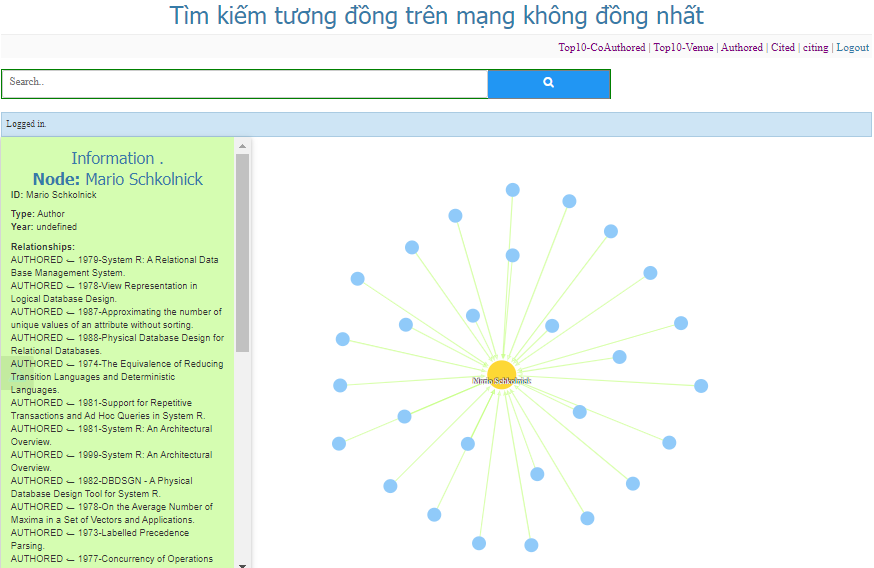
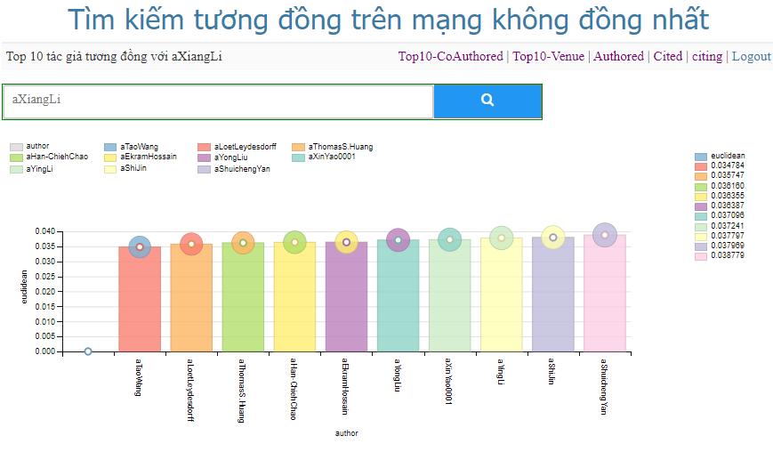
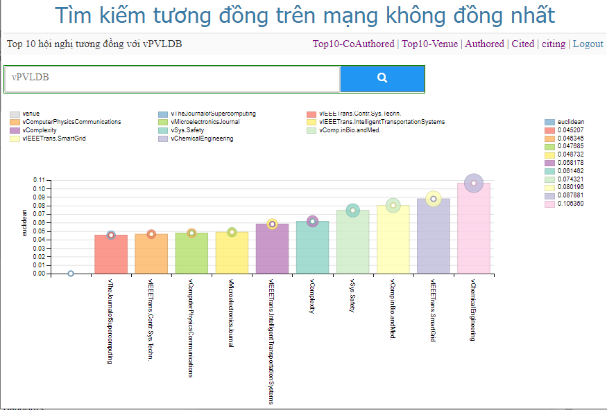
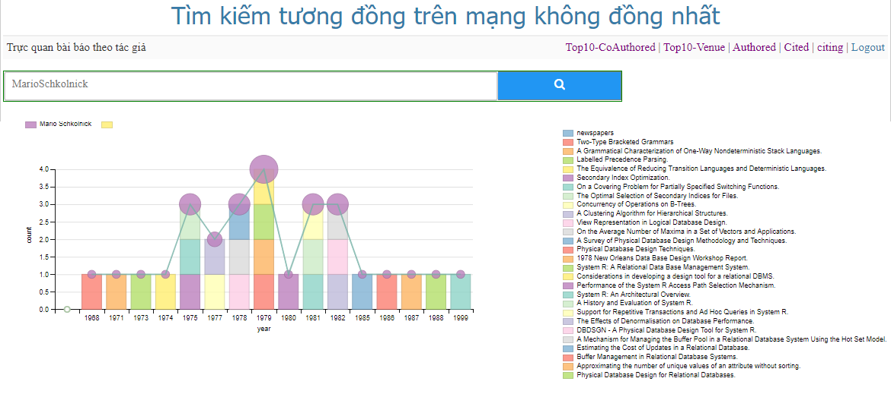
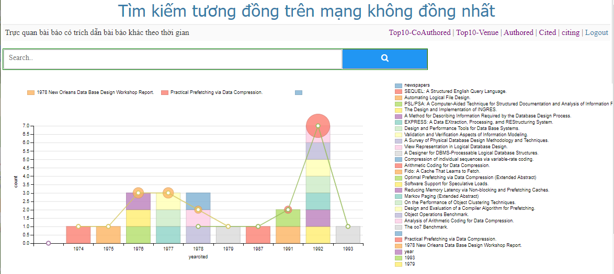
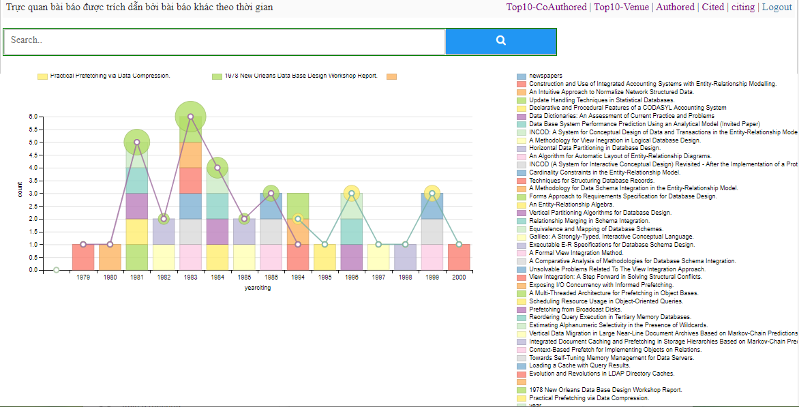

Tìm Kiếm Sự Tương Đồng Trên Mạng Không Đồng Nhất

Giao diện đăng nhập

Biểu diễn mối quan hệ Tác giả - Bài báo

Tìm top 10 tác giả tương đồng theo độ đo Euclid

Tìm top 10 hội nghị tương đồng theo độ đo Euclid

Tìm các bài báo được viết bởi tác giả theo thời gian

Các bài báo có trích dẫn bài báo khác theo thời gian

Các bài báo được trích dẫn bởi bài báo khác theo thời gian